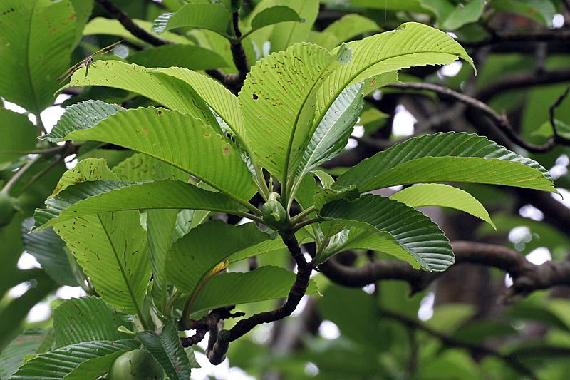

चलताElephant Apple
Dillenia indica · Dilleniaceae · FLR-0420

- Scientific name वैज्ञानिक नाम
- Dillenia indica L.
- Family कुल
- Dilleniaceae
- Hindi हिंदी
- चलता
- Local names स्थानीय नाम
- chalta, chaltr, elephant apple, bhavya
- Status here यहाँ की स्थिति
- native
- Movement आवागमन
- Resident, here all year
- Known from कहाँ दर्ज
- Others have published records from the wider Awadh–Purvanchal plain, none yet from Basti–Ayodhya अवध–पूर्वांचल से दूसरों के प्रकाशित अभिलेख, बस्ती–अयोध्या से अभी नहीं
- IUCN IUCN
- LC
- Review समीक्षा
- not yet reviewed
When to look कब देखें
Present all year. साल भर मौजूद।
Uses and possibilities उपयोग और संभावनाएँ
“Traditional medicine” means a documented traditional use, not a claim that it works. Nothing on this page is medical advice.
Drawn from the documented uses in the profile below, where each is labelled traditional, current or a research lead. All uses →
Tell it apart from इनसे अलग पहचानें
चलता / Elephant Apple
Dillenia indica L. — Dilleniaceae
चलता — तराई के नम जंगलों और नदी कछारों का यह एक विशालकाय सदाबहार पेड़ है। इसके पत्ते बड़े, चटक हरे और समानांतर उभरी नसों वाले होते हैं, जो देखने में आरीदार लगते हैं। इस पर बड़े सफेद और सुगंधित फूल पत्तियों के साथ खिलते हैं। इसके बाद मोटे मांसल बाह्यदलों से ढका गोल फल बनता है जिसे हाथी सेब कहते हैं। पारंपरिक चिकित्सा में इसके फल के रस का उपयोग बुखार और खांसी में किया जाता है।
Quick Identification त्वरित पहचान
| Feature | Description |
|---|---|
| Habit | Medium to large evergreen tree with a dense, spreading, rounded crown |
| Bark | Smoothish to flaky, reddish-brown or cinnamon-brown, peeling in thin scales |
| Leaves | Alternate, oblong-lanceolate, sharply serrate, with prominent close-set parallel veins |
| Flowers | Large, solitary, subterminal, white with bright yellow central stamens |
| Fruit | Large, globose, pomiform, enclosed by enlarged fleshy yellowish-green sepals |
| Seeds | Numerous, compressed, embedded in glutinous pulp, with hairy margins |
Field tip: Look along moist stream margins and shaded forest ravines in the northern Terai belt. The uniquely ribbed parallel-veined leaves and massive cabbage-sized green fruits lying beneath the tree are unmistakable.
हिंदी: घने छायादार मुकुट और खुरदरी दालचीनी जैसी छाल से इसे पहचाना जाता है। इसके बड़े पत्तों पर उभरी हुई धारियाँ और जमीन पर गिरे भारी गोल फल इसकी मुख्य पहचान हैं।
Morphology आकारिकी
| Measurement / Trait | Range / Description |
|---|---|
| Habit | Moderate-sized to tall tree reaching canopy stature in moist river valleys |
| Trunk & Crown | Cinnamon-brown trunk dividing into stout spreading branches forming a round head |
| Leaf-blade | Oblong-lanceolate, acute, sharply serrate, glabrous above, pubescent on veins beneath |
| Venation | Strikingly parallel secondary veins running straight to each margin serration |
| Flower-diameter | 6–7 in. (Kirtikar & Basu 1918) |
| Petals | Pure white, obovate, spreading, with yellow staminal column |
| Fruit | Compound globose fruit formed of numerous carpels enclosed by enlarged fleshy sepals |
A handsome medium-sized or large evergreen tree with a dense rounded crown and smoothish cinnamon-brown bark. The leaves are crowded at the branch tips, measuring oblong-lanceolate with sharp marginal serrations and conspicuous parallel veins.
The flowers are solitary and subterminal, opening in June and July (Duthie 1903). The sepals become greatly thickened, fleshy, and tightly imbricate around the developing carpels, forming a massive, hard, subglobose fruit resembling a green apple.
हिंदी: इसके पत्ते किनारे से नुकीले दांतों वाले होते हैं। 6–7 in. व्यास वाले सफेद फूल शाखाओं के सिरों पर अकेले खिलते हैं और फल के पकने पर बाहरी दल मोटे और रसीले हो जाते हैं।
Behaviour & Ecology व्यवहार और पारिस्थितिकी
Elephant apple thrives in tropical moist forest regimes, particularly along alluvial river banks, wet hollows, and damp valley floors. It demands deep moist alluvium and partial shade during early growth, later expanding into the upper subcanopy.
The heavy fruits represent a classic example of megafaunal dispersal syndrome, adapted primarily for consumption by large mammals such as wild elephants, which swallow the fruits whole and pass the seeds unharmed in rich organic dung. In rivers, fallen fruits float downstream, distributing seeds along sandbars and muddy banks.
हिंदी: यह पौधा नम मिट्टी और नदी किनारे के दलदली क्षेत्रों में पनपता है। इसके भारी फल जंगली हाथियों और अन्य बड़े जानवरों द्वारा खाकर दूर-दूर तक फैलाए जाते हैं।
Life Cycle / Phenology जीवन चक्र
Duthie (1903, p. 21) describes Dillenia indica as an evergreen tree with large, solitary, subterminal white flowers appearing with the leaves, and adds: "The fragrant flowers open during June and July, and the round hard apple-like fruits ripen during the cold season."
The sepals are fleshy, and the acid calyx surrounds the ripe carpels (Duthie 1903, p. 21).
हिंदी: दूथी (1903, पृ. 21) के अनुसार यह एक सदाबहार पेड़ है जिस पर पत्तियों के साथ बड़े सफेद फूल अकेले खिलते हैं। इसके सुगंधित फूल जून और जुलाई में खिलते हैं और गोल कठोर फल ठंड के मौसम में पकते हैं। इसके बाहरी दल फल को घेर लेते हैं और पकने पर भारी फल जमीन पर गिरता है।
Associated Species / Interactions सहजीवी प्रजातियाँ
Elephant apple forms mixed riverine associations alongside जामुन (Syzygium cumini), सेमल (Bombax ceiba), and साल (Shorea robusta) across sub-Himalayan gallery forests.
Its flowers provide copious pollen and nectar to large bees, while fallen fruits are consumed by herbivores and omnivores. The broad, deeply ribbed foliage acts as a host substrate for diverse lepidopteran larvae and micro-epiphytes in humid valley microclimates.
हिंदी: यह तराई में जामुन, सेमल और साल के पेड़ों के साथ उगता है। इसके फूलों पर भंवरे आते हैं और पके फलों को जंगली जानवर चाव से खाते हैं।
Pests and Diseases कीट और रोग
In damp forest pockets, the leaves are occasionally affected by leaf-spot fungi and anthracnose, resulting in brownish necrotic patches between the veins.
Defoliating caterpillars occasionally attack young flushes of foliage during the post-monsoon period. Fleshy fallen fruits rot rapidly on saturated ground if undispersed, colonized by saprophytic fungi and drosophilid fruit flies.
हिंदी: अधिक नमी वाले स्थानों में इसके पत्तों पर फफूंद के धब्बे पड़ सकते हैं। जमीन पर गिरे फलों पर मक्खियाँ और कवक तेजी से पनपते हैं।
Agricultural / Human Relevance कृषि प्रासंगिकता
Kirtikar & Basu (1918, p. 34) record of Dillenia indica: "The juice of the fruit, mixed with sugar and water, is used as a cooling beverage in fevers, and as a cough mixture. The bark and the leaves are astringent, and are used medicinally."
Chopra et al. (1956, p. 97) likewise record under Dillenia indica that the bark and leaves are astringent and the fruit is cooling and laxative.
हिंदी: कीर्तिकर और बसु (1918, पृ. 34) के अनुसार इसके फल का रस पानी और चीनी के साथ मिलाकर बुखार और खांसी में ठंडक देने वाले पेय के रूप में दिया जाता है। छाल और पत्ते कसैले होते हैं और औषधीय रूप से उपयोग किए जाते हैं।
Expected Locally स्थानीय रूप से अपेक्षित
Not a field record. Written from published accounts for eastern Uttar Pradesh. No confirmed local sighting yet — if you have seen it, that is what the atlas needs.
अभी तक स्थानीय पुष्टि नहीं। यह विवरण प्रकाशित स्रोतों से है, किसी अवलोकन से नहीं।
GBIF holds published records from the wider Awadh–Purvanchal plain, none yet from Basti–Ayodhya.
In eastern Uttar Pradesh, this species occurs natively in the moist sub-Himalayan forests of Dudhwa, Katarniaghat, and Suhelwa, as well as occasional specimens planted in old orchards or botanical gardens in Lucknow and Gorakhpur. A documented record from the core districts would consist of a voucher specimen or high-resolution photograph of the diagnostic foliage, flowers, or fleshy fruit, accompanied by precise date, GPS coordinates, and habitat notes.
हिंदी: अवध के तराई वाले जिलों में इसके प्रकाशित प्रमाण हैं, लेकिन बस्ती-अयोध्या क्षेत्र में अभी तक पुष्टि नहीं हुई है। किसी पुराने बाग या नदी किनारे इसका मिलना महत्वपूर्ण होगा।
Distribution वितरण
Native across tropical and subtropical South and Southeast Asia, ranging from the sub-Himalayan tract of northern India through Nepal, Bangladesh, Assam, Myanmar, Thailand, Malaysia, and southwestern China.
In northern India, it occurs along the Terai belt from Uttarakhand eastward across northern Uttar Pradesh to Bihar and West Bengal. In Uttar Pradesh, wild populations are confined to riverine corridors of the northern border districts.
हिंदी: यह पेड़ भारत, नेपाल, म्यांमार और दक्षिण-पूर्व एशिया के आर्द्र वनों में पाया जाता है। उत्तर प्रदेश में यह तराई के संरक्षित वनों और नमी वाले नालों के पास मिलता है।
Research Questions शोध प्रश्न
- What native mammalian frugivores disperse elephant apple seeds across the fragmented riparian corridors of northern Uttar Pradesh?
- Does seed passage through large mammal guts significantly alter germination rates compared to river-dispersed waterborne seeds?
- क्या घाघरा और राप्ती के बाढ़ कछारों में इस प्रजाति के जंगली पौधे प्राकृतिक रूप से जीवित रह सकते हैं?
- How resilient are young saplings to prolonged inundation during severe monsoon flooding in lowland silt plains?
- क्या इसके खट्टे फलों से स्थानीय स्तर पर मूल्यवर्धित उत्पाद बनाकर ग्रामीण आय बढ़ाई जा सकती है?
हिंदी: क्या तराई के अलावा मैदानी इलाकों में भी इसके बीज नदियों द्वारा बहकर प्राकृतिक रूप से उग सकते हैं, इस पर अध्ययन जरूरी है।
Similar Species मिलती-जुलती प्रजातियाँ
| Species | Key Differences | Habitat / Occurrence | |
|---|---|---|---|
| Dillenia pentagyna (Agai) | Deciduous tree; flowers smaller, yellow, fascicled on bare branches before leaves emerge | Dry and mixed deciduous forests of sub-Himalayan tract | |
| Dillenia aurea (Aggai) | Solitary yellow flowers appearing before foliage; fruit smaller than D. indica | Terai forests of northern Awadh; dry hillsides | |
| [[jamun | जामुन (Syzygium cumini)]] | Opposite simple leaves without prominent parallel ribs; dark purple edible berries | Ubiquitous along riverbanks, swamps, and village groves |
| [[semal | सेमल (Bombax ceiba)]] | Palmately compound leaves; thorny trunk; large bright red spring flowers | Common deciduous tree of plains, forests, and roadsides |
Field rule: An evergreen tree with enormous sharply serrate leaves showing parallel side-veins and heavy green pomiform fruits wrapped in thickened fleshy sepals is Dillenia indica.
हिंदी: पीले फूल वाले अगई (Dillenia pentagyna) के फूल पत्ते आने से पहले खिलते हैं, जबकि चलता में पत्तों के साथ बड़े सफेद फूल आते हैं।
Taxonomy & Classification वर्गीकरण
Original description. Described by Carl Linnaeus in 1753 in Species Plantarum, volume 1, page 535 (Dillenia indica L.). The genus honours the German-born botanist Johann Jacob Dillenius.
Subspecies. Monotypic; no valid subspecies are recognized. Regional variations in fruit size and leaf pubescence reflect ecological plasticity across its broad Indo-Malayan range.
Family and order placement. Placed in the family Dilleniaceae within the order Dilleniales, representing an isolated lineage of basal core eudicots.
IUCN status rationale. Evaluated as Least Concern (LC) on the IUCN Red List due to its expansive geographic distribution, widespread occurrence across Indo-Malayan river basins, and representation in multiple protected areas.
हिंदी: लीनियस ने 1753 में इसका वर्णन किया था। यह डिलेनियासी कुल का पौधा है और व्यापक वितरण के कारण इसे आईयूसीएन द्वारा संकटमुक्त (LC) श्रेणी में रखा गया है।
Photo Gallery फोटो गैलरी
No photos yet. (Contributions welcome!)
References संदर्भ
- Linnaeus, C. (1753). Species Plantarum, Tomus I. Impensis Laurentii Salvii, Holmiae, p. 535.
- Duthie, J. F. (1903). Flora of the Upper Gangetic Plain, and of the Adjacent Siwalik and Sub-Himalayan Tracts, Vol. 1, Part 1. Superintendent of Government Printing, Calcutta, p. 21.
- Kirtikar, K. R. & Basu, B. D. (1918). Indian Medicinal Plants, Part 1. Panini Office, Bhuwaneshwari Asrama, Bahadurganj, Allahabad, pp. 33–34.
- Chopra, R. N., Nayar, S. L. & Chopra, I. C. (1956). Glossary of Indian Medicinal Plants. Council of Scientific & Industrial Research, New Delhi, p. 97.
- IUCN Red List of Threatened Species (2026). Dillenia indica. Version 2025-2.
- GBIF Secretariat (2026). Dillenia indica L. GBIF Backbone Taxonomy. Checklist dataset https://doi.org/10.15468/39omei.
Source file: species/flora/trees/elephant_apple.md